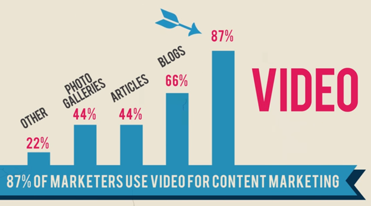
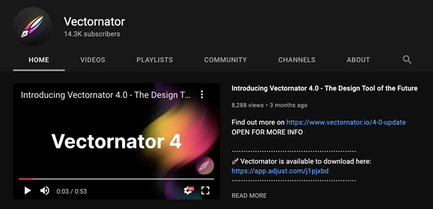
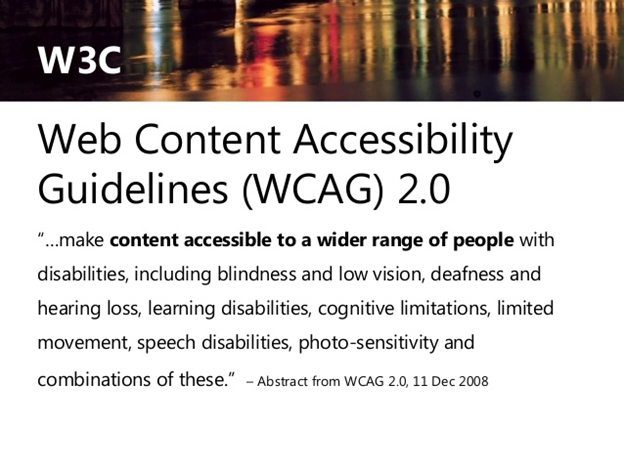
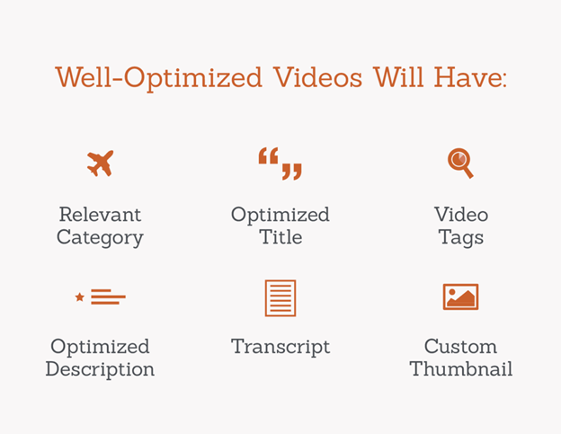

Click the  button and start listening to this article.
button and start listening to this article.
The most important thing in social media content is simply to do it, but how can you maximize the impact of the content you produce? The best measure of the impact your social media contact has on your network is user engagement.
Internet marketers generally measure user engagement in the number of:
- Likes
- Comments
- Shares
- Downloads
- Other interactions users have with your content
The more entertaining and valuable your content is, the more engagement you’ll get from your networks, and the larger your social media impact will be.
However, it’s possible to lose viewers’ interest in your content if it doesn’t fit in with other content on your network.
This article will talk about some of the rules, guidelines, and trends in social media videos. You’ll learn how to maximize the reach of your video content by making it accessible and optimizing it for your social media network(s).
Finally, we’ll provide some additional resources to help you produce unique and impactful social media video content.
What are the rules for social media video?
As with most social media content, there are no hard and fast rules about making an excellent social media video. The one rule most internet marketers agree on, though, is that you should be using video on your social media channels.
Consumers say video ads are the top way they discover new brands on social media.
With 86% of businesses now using video as a marketing tool, it’s essential to keep an eye on the industry and network trends to maximize the impact of your video presence.
Every industry, network, and subnetwork has a unique feed algorithm that causes some videos to go viral while others fall flat. Being aware of what works for your product or service in your network is vital.
As long as you’re doing video as part of your social media strategy, there are no rules for you to break and no consequences for doing things differently.
However, there are certain things you can do to help your social media video posts perform their best. Best practices vary from network to network, so knowing what works for your network(s) is the most important thing.
On Facebook, you can maximize the engagement of your videos by including a description that isn’t thrifty with words – 300 characters or more is best.
This gives the user time to get acquainted with your content and be drawn in before the video starts. Finally, to maximize your video’s impact, skip the middleman and post straight to Facebook instead of linking to a video posted somewhere else.
Twitter, on the other hand, requires slightly different tactics to maximize engagement at the post level. Facebook users are drawn in by longer descriptions, while the Tweet that posts your video should be kept short to maximize brand and message recall.
Remember that Twitter began as a micro-blogging platform where “brevity” was taken to the extreme, and users still favor shorter tweets.
There are several things to consider when developing your video posts, and these guidelines are just the beginning. We will continue to discuss more specific ways to increase the impact of your video content on social media below.
How long should videos be?
Believe it or not, you can improve the reach and engagement of your video content on social media just by keeping it to the correct length.

Again, there are no complex rules here aside from the maximum video lengths discussed below. However, for every network, there are specific trends in which videos perform better than others.
Each network has an ideal video length to maximize viewers’ engagement with your content. The optimal video length for Facebook across pages of all sizes, for example, is between 2 and 5 minutes.
Pages with smaller followings may maintain engagement for up to 20 minutes, while larger businesses will need to keep their videos short.
Facebook ads, however, peak in conversion rates at about 16-20 seconds in length, regardless of business size, unlike general Facebook feed videos. This means that it’s important to consider what kind of video content you’re publishing and not just how long it is.
Above, we discussed that Twitter users are more likely to read shorter blocks of text attached to videos. They also like the videos posted to be shorter.
- You’ll get the best engagement from your followers and new viewers on Twitter if your video is between 20-45 seconds long.
- TikTok videos perform best at even shorter lengths of 9 to 15 seconds, and Snapchat takes the attention span to an absolute minimum, recommending 3-5 seconds of video for maximum impact.
- LinkedIn’s user base has a little more variation in the length of video they’re willing to consume, but again, it’s better to be brief here.
- Senior audiences, for example, are only willing to watch about 3 minutes of video to get the information they need to make a decision.
- While YouTube allows for the longest video uploads, users still engage more with shorter content of around 2 minutes.
However, you can maximize user engagement even with longer content by knowing your network and your market.
The right kind of videos on YouTube, such as explainers, product demonstrations, and informative content, performs well at any length.
Again, aside from the length and size limits discussed below, there are no real rules when it comes to the length of your content. Knowing the needs of your network and your market is critical.
Across most social media networks, it’s better to get the information in sooner rather than later before your viewers lose interest.
What does social media video accessibility mean?
Traditional videos are not automatically accessible by people with specific disabilities and audio, visual, or other impairments. You should want to make all of your content accessible to anyone who wants to consume it.

Taking steps to increase the accessibility of video and other social media posts can extend your reach and help your market get what they need from your business.
- Adding closed captioning to your videos allows viewers (and screen readers) to read the message of your content rather than having to listen to it.
This enables users with hearing and attention disabilities to engage with your content and improve access, allowing you to extend your reach. Using infographics and other visual ways of conveying information can also improve accessibility and engagement.
- Alt text – alternative text that describes an image or video – also improves accessibility for visually impaired people.
To make your content accessible to as many people as possible, you should ensure that your videos have descriptive text added to the captions wherever there are gaps in a video’s dialogue.
Alt text can include facial expressions, visual descriptions of the setting, and other helpful contextual details.
In addition to providing alt text and closed captioning, you can also supplement your video by providing viewers with a transcript of your video social media posts.
This is easier on some platforms than others, as some networks have character limits for the text posts accompanying your videos. If this is a problem, you can provide a shortened hyperlink to a page with the transcript.
Whether or not your followers have a disability that necessitates the use of captions and alt text, however, it’s still a best practice to optimize your video for viewing without sound.
85% of all Facebook video views in 2016 happened with the sound off, and many users browse Facebook with their devices on silent. Relying solely on your video’s audio can cause you to lose some viewers almost instantly, no matter how high quality your content is.
Beyond the audio in your video, it’s also important to consider the readability of your text and images.
The text should be legible, and colors should have sufficient contrast to be easily distinguishable from one another so that those with both audio and visual impairments can enjoy your content.
By providing alternate ways for your users to access your content, you can improve their user experience and maximize the impact of your social media videos.
How to optimize video for social media?
If you want to give your content the best possible chance of performing well, it’s essential to consider more than just the optimal length of the video.

There are general rules, guidelines, and trends that you should be aware of when creating your content for each network. These include formatting recommendations and other performance tips.
Every network has different formatting recommendations and requirements to be aware of. Some of these are related to the viewing experience within their websites and apps and are necessary for users to view your content easily.
Other recommendations are about viewer engagement and maybe less technical or may make use of unique native features of the app.
- Facebook recommends that videos posted on its platform have H.264 compression, stereo AAC audio compression at 128kbps or higher, a fixed frame rate, and square pixels. In general, videos shot in portrait mode (9:16 aspect ratio) and square videos (1:1 aspect ratio) perform better than videos in landscape mode on this platform.
- Instagram automatically compresses photos and videos when you upload them, which saves most users time but can be problematic for some videos. If you want to process your own Instagram videos, they recommend a frame rate of 30 FPS. Videos can be square, portrait, or landscape, but square videos perform best across the board.
- Snapchat recommends you should aim to keep the top margins of your video clear of graphics, logos, or other distracting details that could overlap with your user information.
- LinkedIn recommends businesses post portrait-mode videos whenever landscape isn’t necessary, as users would rather not have to rotate their phones. The same is true for Snapchat and TikTok, which are almost exclusively mobile-based platforms.
- YouTube’s unique platform allows you to create a digital library of content. You can maximize engagement by creating multiple playlists that categorize your videos in different ways. This way, users will logically flow from one video to the next relevant piece of content.
As you can tell from various guidelines and recommendations from each social network’s platform, you must know the formats and limits for your preferred networks.
Trying to post the same type of video to each network will give you weak results on most. Try to be strategic with the types of videos you post and where.
Length limits for every social media network in 2021
Every social media network has different limits in terms of length and size. The maximum video length and size for each of the most popular social networks are listed below.
1. Facebook
Facebook allows users to post videos from 1 second to 240 minutes long, so long as they come in under the network’s maximum file size of 4 GB.
2. LinkedIn
LinkedIn allows users to post videos from 3 seconds to 10 minutes long, so long as they come in under the network’s maximum file size of 5 GB.
3. Instagram
- Instagram video length allows users to post feed videos from 3 seconds to 60 seconds long, so long as they come in under 650 MB, including reels.
- Videos on IGTV can be between 15 seconds and 10 minutes long, though accounts with over 10,000 followers can post videos of up to 60 minutes.
- Videos on IGTV must be less than 3.6 GB.
4. Snapchat
Snapchat allows users to record videos up to 10 seconds long, combining up to 6 clips for up to 60 seconds of sequential video.
5. TikTok
TikTok initially only allowed users to record 15 and 60-second video clips but has recently extended that length to up to 3 minutes for some creators.
6. YouTube
All YouTube users can upload videos up to 15 minutes long. Users with verified Google accounts can upload videos of up to 256 GB or 12 hours, whichever is less.
What are the best video types?
Live-streamed video on Facebook generates double the engagement rate of pre-recorded videos, with even better engagement for live streams over an hour long. Fun, informative videos perform best and should begin with appealing visuals to draw users scrolling on mute.
User-generated videos receive nearly 10x as many views on YouTube as content produced by the businesses themselves and keep users on the site for longer. On Instagram, stories shot on mobile usually outperform professionally recorded ads.
This trend is relatively consistent across all platforms, which means that a lower resource investment often generates a higher engagement rate.
On Instagram, users engage most often with time-lapse and back-and-forth looping videos. YouTube’s platform accommodates longer, more in-depth content such as demonstration videos, tutorials, and vlogs.
You can post teaser videos on Twitter that link to longer-form content on other platforms for added reach.
The Snapchat videos that perform best are those that mimic user content. Using the platform’s camera, filters, and other built-in features (or features that mimic them) can keep your users watching for longer.
As a general rule of thumb, try to remember that users are drawn to a social media platform because of the features of that network.
Therefore, taking advantage of those features (live streaming, video editing, etc.) will help you maximize the impact of the content you post on those networks.
Summing up
When creating video content for social media, there are a lot of ways you can tailor your content to maximize the value you provide to your viewers and the engagement you receive from them.
A straightforward way of improving your content’s performance is by editing it to fit within the optimal time range for the networks you use.
Users of each network have different attention spans, and tailoring your content to their preferences makes a big difference.
There’s more to maximizing your reach than simply keeping your videos within a specific time frame, however. Each social media network has unique features that attract users to it and making use of these features can help your content perform better.
If you understand your social media network well, you can create better-performing content.
When creating video content for social media, the most important thing to do is just to do it. Videos draw more engagement from users than text or photo posts and are a great way to quickly convey your brand’s message and personality.
You can refine your impact by knowing your network’s video marketing and social media trends and the things that attract your network’s users.
About the Author:
Luke Fitzpatrick has been published in a variety of publications such as Forbes, Tech In Asia, and The Next Web. He is also a guest lecturer at the University of Sydney, lecturing in cross-cultural management and the pre-MBA program.
Leave a Reply